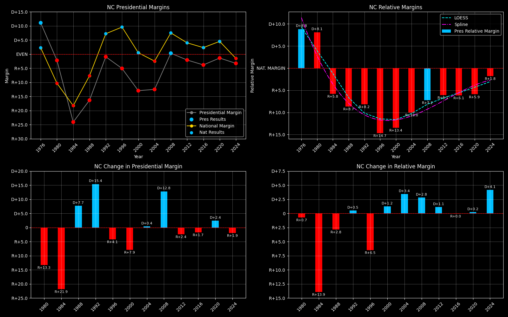

← Back to Map

North Carolina statewide
North Carolina (NC) — Data
| Year | D | R | Margin | Relative Margin | Nat'l Margin | Margin Δ | Relative Margin Δ | Nat'l Margin Δ |
|---|
| 1976 | 927365 | 741960 | D+11.1 | D+8.8 | D+2.3 | 0 | 0 | 0 |
| 1980 | 875635 | 915018 | R+2.2 | D+8.1 | R+10.3 | R+13.3 | R+0.7 | R+12.6 |
| 1984 | 824287 | 1346481 | R+24.1 | R+5.8 | R+18.2 | R+21.9 | R+13.9 | R+7.9 |
| 1988 | 890167 | 1237258 | R+16.3 | R+8.7 | R+7.7 | D+7.7 | R+2.8 | D+10.6 |
| 1992 | 1114042 | 1134661 | R+0.9 | R+8.2 | D+7.2 | D+15.4 | D+0.5 | D+14.9 |
| 1996 | 1107849 | 1225938 | R+5.1 | R+14.7 | D+9.6 | R+4.1 | R+6.5 | D+2.4 |
| 2000 | 1257692 | 1631163 | R+12.9 | R+13.4 | D+0.5 | R+7.9 | D+1.2 | R+9.1 |
| 2004 | 1525849 | 1961166 | R+12.5 | R+10.0 | R+2.5 | D+0.4 | D+3.4 | R+3.0 |
| 2008 | 2142651 | 2128474 | D+0.3 | R+7.2 | D+7.5 | D+12.8 | D+2.8 | D+10.0 |
| 2012 | 2178391 | 2270395 | R+2.1 | R+6.1 | D+4.0 | R+2.4 | D+1.1 | R+3.5 |
| 2016 | 2189316 | 2362631 | R+3.8 | R+6.1 | D+2.3 | R+1.7 | R+0.0 | R+1.7 |
| 2020 | 2684292 | 2758773 | R+1.4 | R+5.9 | D+4.5 | D+2.4 | D+0.2 | D+2.2 |
| 2024 | 2715375 | 2898423 | R+3.3 | R+1.8 | R+1.5 | R+1.9 | D+4.1 | R+6.0 |